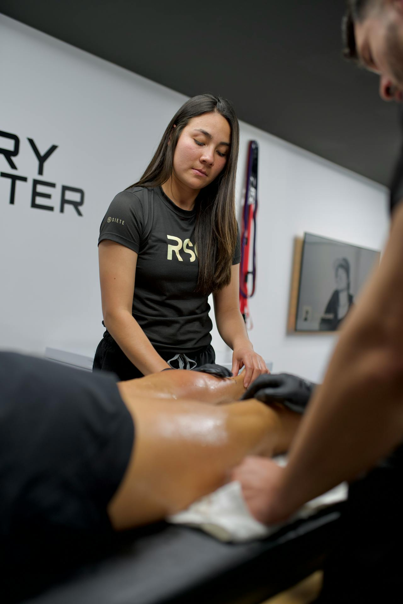

I have a recent injury
Sprains, strains, impact injuries, or sudden pain limiting practice and competition.
Start assessmentAthlete-Centered Care
Personalized sports rehabilitation focused on pain reduction, movement quality, and confident return to training and competition.

Amethyst Sports Solutions is dedicated to providing comprehensive care for athletes of all levels, from injury prevention to performance optimization. Our team of experts offers a range of services, including sports medicine, physical therapy, and rehabilitation. We work closely with athletes to develop personalized treatment plans that address their unique needs and goals. Whether you're a professional athlete or a weekend warrior, Amethyst Sports Solutions is here to help you achieve your best performance and maintain your overall health and well-being.
Who this service is for
Whether you are recovering from injury, training through pain, or returning after surgery, we build a plan around your sport, baseline, and timeline.
Sprains, strains, impact injuries, or sudden pain limiting practice and competition.
Start assessmentOngoing knee, shoulder, elbow, or Achilles pain affecting consistency and confidence.
See treatment optionsStructured progression to rebuild mobility, strength, and sport-specific movement safely.
Plan my recoveryInjury-risk reduction and movement optimization for competitive or recreational training.
Book consultCommon issues we treat
From acute sports injuries to recurring overuse pain, our team builds focused treatment plans that reduce downtime and support a safe return to full activity.
Knee instability, swelling, and giving-way episodes during cutting or pivoting sports.
Goal: restore joint stability and confidence for return to game movement.
Locking, deep knee pain, and reduced tolerance for running, squatting, or stairs.
Goal: reduce irritation and rebuild controlled load tolerance.
Pain during overhead motion, weakness in lifting, and reduced throwing capacity.
Goal: improve shoulder control, power, and pain-free range.
Front or outer knee pain linked to mileage, terrain changes, or training spikes.
Goal: correct loading mechanics and progress running safely.
Tendon irritation at elbow, knee, Achilles, or hip from repetitive stress and under-recovery.
Goal: settle pain, then recondition tendon strength and resilience.
Repeated ankle rolling, stiffness, and poor landing confidence after prior sprains.
Goal: restore balance, control, and multidirectional footwork.
How treatment works
Injury history, movement testing, pain mapping, and baseline goals.
Clear explanation of what is driving symptoms and what to prioritize first.
Phase-based rehab aligned with your sport demands and recovery timeline.
Strength, power, and loading benchmarks before full return to training.